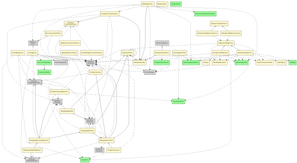

Class Diagram Example: Multiple Views Using the Built-in Support
Documenting a big project often requires multiple diagrams:
each to show a specific and limited portion of the system.
Each diagram is usually composed of few classes, possibily using a different detail level.
The @view tag, marks a special class used to describe a single class diagram.
Similarly to UMLOptions, the view can define its own general options,
but allows to define overrides that allow to adopt different options
for different classes based on regular expressions matching.
The general syntax for defining a view is:
/**
* @view
* @opt [!]viewOption1
* @opt [!]viewOption2
* ...
* @match regularExpression1
* @opt [!]option1.1 [argument]
* @opt [!]option1.2 [argument]
* ...
* @match regularExpression2
* @opt [!]option2.1 [argument]
* @opt [!]option2.2 [argument]
* ...
*/
The view options are applied to every class in the view (so they are the
global options for this class diagram).
The regular expression will be used to match a single class, a group of
classes, or a package, and the options that follow will be applied to
those classes.
Multiple matches will be evaluted in the order of specification.
Refer to the Pattern
class documentation for details on a proper regular expression specification.
Each view will generate a .dot file whose name is the name of the view,
unless the "output" option is specified to override it.
View inheritance
View classes can inherit from other view classes, allowing views to
share a set of common matches. The standard java inheritance mechanism
is used to specify inheritance.
Abstract view classes won't be used to generate diagrams, the common
idiom is to declare a base abstract view to share common options and
overrides, and have concrete view classes that extend for diagram generation.
Example: views at different detail of specification
The previous multiple view example can be generated by using internal
view support by means of the following sources (note the use of UmlOptions
to set the common appearance options, and the views to generate multiple
diagrams at different detail level).
// Author: Vadim Nasardinov
// Author: Andrea Aime
// Version: $Id$
import java.util.List;
import java.util.Map;
/**
* @assoc "1..1" - "0..n" Adapter
* @assoc "" - "0..n" ObjectType
* @assoc "" - "0..n" ObjectMap
* @assoc "" - "0..n" Table
* @assoc "" - "0..n" DataOperation
**/
class Root {
private Map m_adapters;
private List m_types;
private List m_maps;
private List m_tables;
private List m_ops;
public Adapter getAdapter(Class klass) {}
}
class Adapter {
public Root getRoot();
}
abstract class Element {
Root getRoot() {}
}
class ObjectType extends Element {}
/**
* @has "1..1" - "1..1" ObjectType
**/
class ObjectMap extends Element {
private ObjectType m_type;
}
class Table extends Element {}
class DataOperation extends Element {}
/**
* @hidden
* @opt nodefontname luxisr
* @opt nodefontabstractname luxisri
* @opt edgefontname luxisr
* @opt nodefontsize 8
* @opt edgefontsize 8
* @opt nodefillcolor LemonChiffon
*/
class UMLOptions {}
/**
* @view
* @opt attributes
* @opt operations
*/
class DetailedView {}
/**
* @view
*/
class Overview {}
and by invoking the following commands (assuming UmlGraph.jar is in the
current directory):
javadoc -doclet gr.spinellis.umlgraph.doclet.UmlGraph -private -docletpath UmlGraph.jar -views RootViews.java
dot -Tpng -o root-small.png Overview.dot
dot -Tpng -o root.png DetailedView.dot
Example: per package views
Views are especially interesting in big projects, since they allow to
generate package specific diagrams and overview diagrams in a quick and
consistent way.
As an example we include a few class diagrams that have been generated
from the DBCP connection pool,
without altering the sources and using association and dependency inference
instead.
The base view defines commons options, in particular the use of inference,
common class coloring and class visibility (in particular, we hide the
java runtime classes, with the exclusion of a few java.sql classes).
To avoid visual clutter, we have first shown the java.sql package contents, and
then hid selected classes.
The Overview view provides a full view of the DBCP package,
generating quite a big diagram (click on the diagram to show a full size version).
package org.apache.commons;
/**
* @view
* @opt inferassoc
* @opt inferdep
* @opt useimports
*
* @match .*
* @opt nodefillcolor LightGray
*
* @match org.apache.commons.*
* @opt nodefillcolor PaleGreen
*
* @match org.apache.commons.dbcp.*
* @opt nodefillcolor LemonChiffon
*
* @match java.*|org.xml.*
* @opt hide
*
* @match java.sql.*
* @opt !hide
*
* @match java.sql\.(Ref|Time|Timestamp|Array|Date|Time|Clob|Blob|SQLException|.*MetaData.*|SQLWarning)
* @opt hide
*/
public abstract class BaseView {
}
/**
* @view
*/
public class Overview extends BaseView {
}

The CommonsDbcp view concentrates on the content of org.apache.commons.dbcp
package, hiding other packages and subpackages available in the sources
(click on the diagram to show a full size version).
package org.apache.commons;
/**
* @view
*
* @match org.apache.commons.*
* @opt hide
*
* @match org.apache.commons.dbcp..*
* @opt !hide
*
* @match org.apache.commons.dbcp..*\..*
* @opt hide
*/
public class CommonsDbcp extends BaseView {}
 Finally, the
Finally, the Statement view shows only the Statement related
classes and their dependencies.
package org.apache.commons;
/**
* @view
*
* @match org.apache.commons.*
* @opt hide
*
* @match org.apache.commons.dbcp\..*Statement.*
* @opt !hide
*
* @match org.apache.commons.dbcp..*\..*
* @opt hide
*/
public class Statement extends BaseView {
}